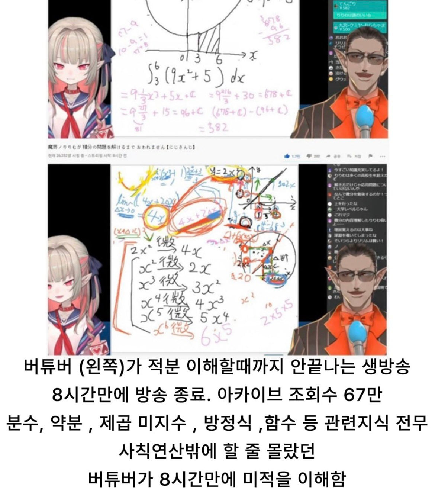
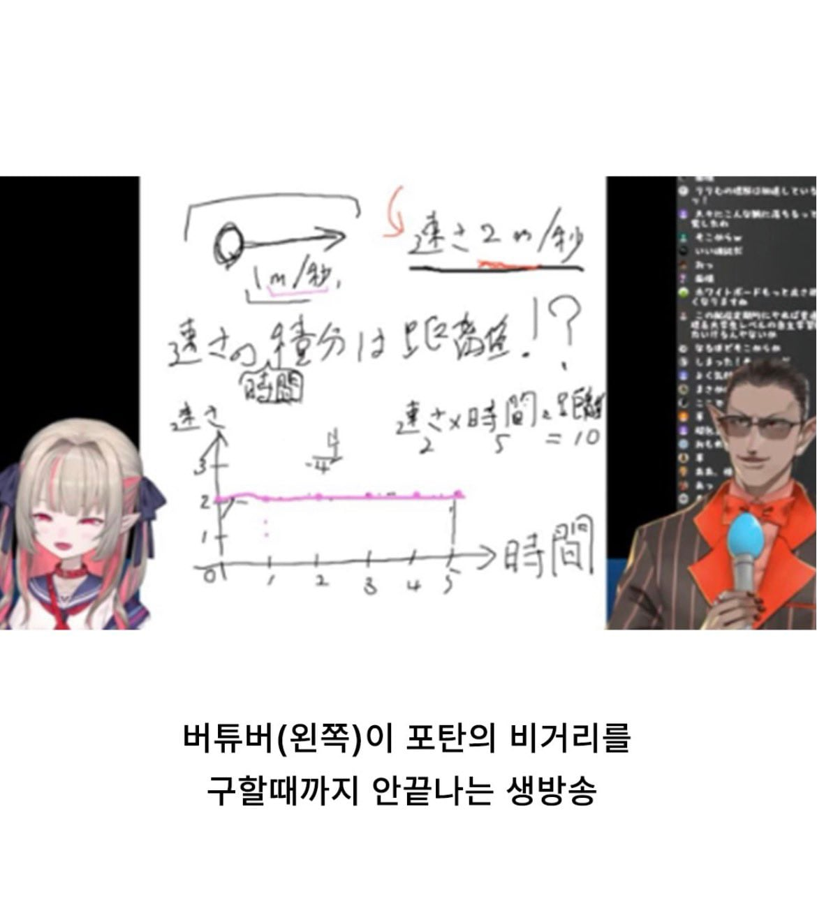
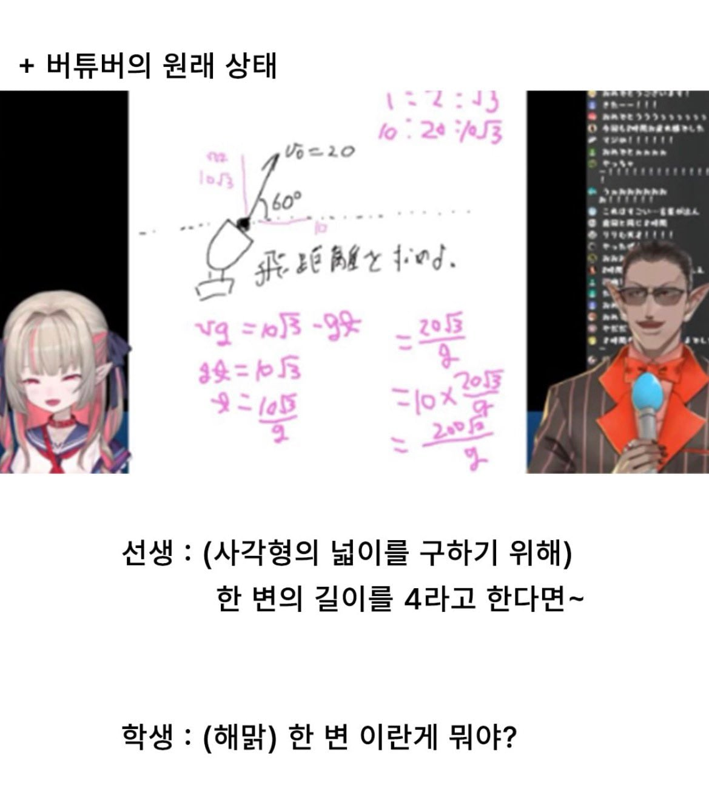

돈도 벌고 공부도 하다니 이게 무슨 소리야
정승제가 침착맨 미분 가르치는것도 재밌더라
침착맨이 이해력이 높아서 그런듯 정승제가 A말하면 B까지 추론 하는것도 잘했고
동산고 출신에 수능잘봐서 수석입학한 침착맨임..
우리가 너무 컨텐츠를 광대로써 소비해서 그렇지
똑똑하긴 하더라
일본 양아치 만화에 지능 양아치캐 같이 생기긴함
지능 양아치캐 ㅋㅋㅋㅋㅋ 아잇 ㅋㅋㅋㅋㅋㅋ
아 그거 내 수면제
pornhub에 수업 올리던 뭔가가 있었는데
저 수학귀신 버튜버는 졸업한지 꽤 되었다고 개드립에서 봄 ㅋㅋ
고교 졸업한지 오래되었다는 뜻이야 아니면 저 수학강의를 마스터하고 졸업을 했다는 의미야?
저 수학 가르쳐주는 버튜버 은퇴했다란 의미임
버튜버는 은퇴를 졸업이라고 하거든
아 은퇴 = 졸업
몰랐네
저거도 꽤 오래된 짤이긴 함 못해도 5년은 넘었을걸?
버튜버가 은퇴할때
졸업 = 기업소속일때 내부적으로 어떻든 사측과 협의하에 법적인 문제 없이 계약 종료가 원만하게 된 은퇴
라곺보면 됨
안좋게 깨지면 퇴출, 계약해지 같은 이런 딱딱한 단어들이 나오기 시작하더라
오른쪽에 있는 양반이 보통이 아니네
컨텐츠 재밌어보이네 ㅋㅋㅋㅋ
수학귀신 ㅋㅋㅋㅋㅋㅋㅋ
번역있나?? 재밌겠다
진짜 수학귀신이네
저거 하기 전에 초등학생 상대로 몇번 가르쳐 봐야 면역좀 생길 듯 초딩 상대 안해보고 일반 성인한테 저런 대답 돌아오면 진짜 피가 식는 기분 들 듯
난 수학을 지수 로그 e 이런거 나오기 시작할때쯤 포기함.....
생각보다 한국 유튜버중에 수학을 제대로 파는 채널이 꽤 있더라? 요즘은 유튭으로도 공부 가능한 시대인듯
근데 수익때문에 하다가 중간에 마니 그만둘듯
그거 린도체널 전문이잔아ㅋㅋㅋ
애초에 대학 과정도 유튭에 싹 공개된 시대라서 의지만 있으면야 무궁무진하게 공부 할 수 있는 시대긴 한듯
모르면 ai한테 해설 부탁하고
수업 40분으로 계산하면 대강 2주를 배운셈이긴함
한국어로 한 고등수학쯤 간단하게 정리해놓은거 없나 수능치고 다 까먹어서 좀 복기해보고싶은데
Gpt
오히려 백지여서 입력이 잘 된 건가?
화면 뒤에서 틀릴 때마다 명치 존나 쎄게 한대씩 팰지도…
저런것도 지능이 좀 돼야 이해하는거임
머리는 있는데 공부를 안한거지
초딩중딩 가르쳐보면 머리가 평균이라도 되면 웬만하면 제 나이에 맞는 과정은 금방 다 가르치고 이해시킬 수 있음
근데 개빡대가리새끼들은 가르치다 화딱지나고 속이 뒤집어져서 못가르침 ㅋㅋ
제일 힘든건 그냥 주의력이 산만하고 집중 자체를 못하는 애들..
이런 애들은 일찌감치 다른 길을 가르쳐주고 싶은데 내가 선생이라 가르쳐야만 하네
수포자들 어떻게든 해야하긴 함
정승제 90일 수학 도움 많이 받았는데
개인적으로는 EBS에서 수능 이후 대학과정용으로도 내주면 대학생들 고통을 덜 받을 거 같음
대수학이나 공업수학이나 과목별로 만들어서 저렴하게 팔면 도움 많이 될 거 같음
헬로! 웰껌 뚜 마 째널. 뚜데이 위 윌 또끄 어받 쎄껀드 오더 디뻐렌쌸 이꿰이뜬.
ㅋㅋㅋ 인도선생님들꺼 존나 찾아서 봤는데 한국어로 나오면 얼마나 좋을까 싶었음
https://www.dogdrip.net/236354937
고대 그리스의 어느 따스한 여름 저녁...
노잼이겠는데
그냥 과외잖아
노력과 학습은 배신 안한다 ㄷㄷ
미적분은 그렇게 어려운게 아니지
하지만 공부 노베한테 8시간만에 가르치는건 뒤지게 어렵지
일단 저 8시간을 집중시키는거부터가 난이도 불지옥임
미적분은 시험용으로 의미이해랑 활용만 하는건 진짜 쉬움
엄밀하게 증명하고 이런게 어렵지
난 확률이랑 경우의 수처럼 꼼꼼하게 따지는게 어렵더라
재밌겠다
막짤보고 벽느꼈다.
솔직히 학교다닐때야 재미없었는데 그냥 순수하게 설명듣고하면 재밌긴함
대단하네 난 벡터가 어려웠는데
리리무 귀엽고 웃김 ㅋㅋㅋ
이 무슨 유익한